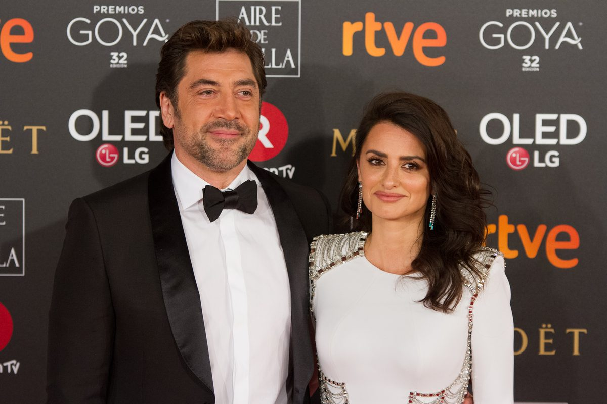

She is the first Spanish actress ever to win an Academy Award — and the first to receive a star on the Hollywood Walk of Fame. From nine years of classical ballet in Madrid to Pedro Almodóvar's films, Woody Allen's Barcelona and Michael Mann's Ferrari, Penélope Cruz has spent more than thirty years moving between Spanish cinema and Hollywood without ever giving up either one.

| Full name | Penélope Cruz Sánchez |
| Born | 28 April 1974, Alcobendas, Madrid, Spain |
| Age | 52 years old (in 2026) |
| Height | 1.68 m (5 ft 6 in) — as listed in her biographies |
| Nationality | Spanish |
| Profession | Actress, producer, former model |
| Years active | 1989 – present |
| Best known for | Volver (2006), Vicky Cristina Barcelona (2008), Parallel Mothers (2021), Ferrari (2023) |
| Net worth | Estimated at $75 million – $90 million (see the net worth section below — no audited figure exists) |
| Spouse | Javier Bardem (married 2010); two children |
Penélope Cruz is a Spanish actress whose career has a shape few stars manage: she is a leading actress in two film industries at once. In Spain she is Pedro Almodóvar's muse, the star of some of the most celebrated Spanish films of the last thirty years. In Hollywood she is an Oscar winner who has worked with Woody Allen, Ridley Scott, Michael Mann and Johnny Depp — and still gone back to Madrid for her next Spanish-language role.
What makes her story stand out is that she never had to choose between the two worlds. She learned her craft in Spanish cinema, took it to Hollywood, and kept returning — not as a guest star, but as the centre of the film. Her Oscar, for Vicky Cristina Barcelona, was won in a film shot in Spain by an American director, in English and Spanish at the same time. That mix — Spanish roots, international reach — is the whole of her career.
Penélope Cruz Sánchez was born on 28 April 1974 in Alcobendas, a town in the province of Madrid, Spain, which makes her 52 years old in 2026. She grew up in a working-class family: her mother, Encarna Sánchez, was a hairdresser from Andalusia, and her father, Eduardo Cruz, was a retailer and car mechanic from Extremadura; he died in 2015, aged 62. She has two younger siblings — her sister Mónica, also an actress, and her brother Eduardo, a singer — and a younger half-sister, Salma.
Dance came before acting. Cruz studied classical ballet for nine years at Spain's National Conservatory, added three years of Spanish ballet and four years of theatre at Cristina Rota's school, and has said the discipline of ballet shaped everything that came after. She became a film lover at ten or eleven, when her father bought a Betamax machine, and decided she wanted to act after seeing Almodóvar's Tie Me Up! Tie Me Down! (1990). She looked for an agent and was turned away three times for being too young — but she kept coming back, and at fifteen she won an audition at a talent agency at which more than 300 other girls had applied. At sixteen she was hosting the Telecinco talk show La Quinta Marcha, and at twenty she went to live in New York for two years, studying ballet and English between films.
Cruz made her debut at fifteen, in a music video for the Spanish pop group Mecano in 1989, and her feature-film debut came in 1992, in Bigas Luna's Jamón Jamón, playing Silvia, a young woman in a small Spanish town caught between two men — one of them played by a then-unknown Javier Bardem. The film was a hit in Spain and introduced both of them to the wider world, and the role earned Cruz a Goya nomination for Best Actress. The same year she appeared in Fernando Trueba's Belle Époque, which went on to win the Academy Award for Best Foreign Language Film.
Through the mid-1990s she worked steadily in Spanish and Italian cinema — Open Your Eyes (Abre los ojos, 1997), Alejandro Amenábar's psychological thriller, and The Girl of Your Dreams (La niña de tus ojos, 1998), for which she won her first Goya Award for Best Actress. By the end of the decade she was already one of Spain's biggest stars, and Hollywood was calling.
The most important working relationship of Cruz's career is with director Pedro Almodóvar. She has starred in seven of his films: Live Flesh (1997), All About My Mother (1999), Volver (2006), Broken Embraces (2009), I'm So Excited! (2013), Pain and Glory (2019) and Parallel Mothers (2021). All About My Mother went on to win the Academy Award for Best Foreign Language Film. No other actress has worked with him so often, and the partnership has defined both of their later careers.
Almodóvar writes women the way few directors do — funny, furious, grieving and resilient in the same scene — and Cruz is his ideal interpreter. In Volver she plays Raimunda, a working-class mother hiding a terrible secret; in Parallel Mothers she plays Janis, a photographer whose life becomes entangled with another woman after they give birth in the same hospital. Both roles earned her Academy Award nominations for Best Actress. She has said that Almodóvar is the director who knows her best, and that his scripts are the ones she waits for.
Cruz's first American film was Stephen Frears' western The Hi-Lo Country (1998), in which she played Josepha, and she went on to star in Woman on Top (2000), her first American lead role, and Billy Bob Thornton's All the Pretty Horses (2000). The turning year was 2001: she played Sofia Serrano, Tom Cruise's love interest, in Cameron Crowe's Vanilla Sky, a psychological science-fiction thriller about a wealthy publishing executive whose life is shattered by a serious accident — a remake of Open Your Eyes, the Spanish film she had starred in four years earlier, a rare case of an actress remaking her own film in another language — and Mirtha Jung, the wife of drug trafficker George Jung (Johnny Depp), in Ted Demme's crime drama Blow, which traces Jung's rise and fall. Vanilla Sky made more than $200 million worldwide. She went on to star in Captain Corelli's Mandolin (2001), Gothika (2003), and Sergio Castellitto's Don't Move (2004), for which she learned Italian and won the David di Donatello for Best Actress.
Her biggest Hollywood turn came a decade later. In Rob Marshall's Pirates of the Caribbean: On Stranger Tides (2011), the fourth film in the series, she played Angelica, a former love of Jack Sparrow, opposite Johnny Depp — the only actress considered for the role. She spent two months training and learning fencing for it, discovered she was pregnant during filming, and her sister Mónica doubled for her in the risky scenes. The film grossed more than $1.046 billion worldwide, among the highest-grossing films of all time, and on 1 April 2011, just before its release, Cruz received the 2,436th star on the Hollywood Walk of Fame — the first Spanish actress ever to receive one.
She kept returning to Hollywood's big ensembles. In Ridley Scott's crime thriller The Counselor (2013) she played Laura, opposite Michael Fassbender, Javier Bardem, Cameron Diaz and Brad Pitt, and in 2017 she played Pilar Estravados in Kenneth Branagh's Murder on the Orient Express, Agatha Christie's classic whodunit, alongside an all-star cast.
In 2018 she starred with Javier Bardem in Asghar Farhadi's Spanish-language psychological thriller Everybody Knows, playing Laura, a woman whose family reunion is shattered when her daughter disappears; the film opened the Cannes Film Festival that year.
Volver (2006) was the turning point. As Raimunda, Cruz gave the performance of her career to that point — earthy, funny and heartbreaking — and it brought her a Golden Globe nomination, a BAFTA nomination and her first Academy Award nomination for Best Actress, making her the first Spanish actress ever nominated for an Oscar. She also shared the Best Actress prize at the 2006 Cannes Film Festival with her co-stars, and won a Goya Award and a European Film Award for the role. Two years later came the win. In Woody Allen's Vicky Cristina Barcelona (2008) she played María Elena, the volatile ex-wife of Javier Bardem's painter, in a performance that is by turns terrifying and hilarious. At the 81st Academy Awards on 22 February 2009 she won the Academy Award for Best Supporting Actress — the film was released in 2008, the Oscar itself was won in 2009 — along with the BAFTA and the Goya for the role.
The win made history twice over: she became the first Spanish actress ever to win an Academy Award, and the sixth Hispanic performer to receive one. She has since been nominated for two more Oscars, giving her four nominations in total and one win: for Rob Marshall's musical drama Nine (2009), in which she played Carla Albanese alongside Daniel Day-Lewis, Nicole Kidman and Marion Cotillard, and for Parallel Mothers (2021). In 2018 she made her television debut as Donatella Versace in the FX series The Assassination of Gianni Versace: American Crime Story, earning a Primetime Emmy nomination.
Parallel Mothers (2021) brought Cruz her fourth Oscar nomination and the Volpi Cup for Best Actress at the Venice Film Festival, and the same year she starred with Antonio Banderas in the film-industry satire Official Competition, which she also helped produce. In 2023 she delivered one of her most praised recent performances in Michael Mann's Ferrari, playing Laura Ferrari — the wife and business partner of Enzo Ferrari, played by Adam Driver — during a turbulent period in the company's history, earning a Screen Actors Guild Award nomination for the supporting role.
She has not slowed down since. In 2026 she played Myrna Malloy, assistant to a Chicago detective, in Maggie Gyllenhaal's gothic romance The Bride! (in cinemas from March 2026), and Piña, one of the upstairs neighbours, in Olivia Wilde's comedy The Invite (in cinemas June 2026, streaming on HBO Max from October 2026), opposite Edward Norton, Seth Rogen and Wilde herself — a performance that earned her a Gotham Award nomination for Outstanding Supporting Performance. In La Bola Negra (The Black Ball), directed by Javier Calvo and Javier Ambrossi, she plays Nené Romero, a cabaret singer, in two musical numbers; the film premiered in competition at Cannes in May 2026, where its directors shared the Best Director prize, and went on to win the People's Choice Award at the 2026 Toronto International Film Festival, where Cruz also received the TIFF Special Tribute Award. She also reunited with Javier Bardem for Bunker, a psychological thriller Florian Zeller wrote for the two of them, which premiered in competition at the 2026 Venice Film Festival. In 2025 she received the Academy Museum of Motion Pictures Icon Award. Next come two 2027 releases: Marc Webb's thriller Day Drinker (26 March 2027), in which she plays Cara Lazaro opposite Johnny Depp, and Nancy Meyers' Paris Paramount, due in cinemas on Christmas Day 2027 alongside Kieran Culkin, Jude Law, Emma Mackey and Owen Wilson.
Her awards, in one place: Academy Award for Best Supporting Actress (Vicky Cristina Barcelona, 2009 ceremony), with further nominations for Volver (2007), Nine (2010) and Parallel Mothers (2022); BAFTA Award for Best Actress in a Supporting Role (Vicky Cristina Barcelona); three Goya Awards — Best Actress for The Girl of Your Dreams and Volver, and Best Supporting Actress for Vicky Cristina Barcelona; a David di Donatello award for Don't Move; two European Film Awards for Best Actress; the Best Actress award at the Cannes Film Festival (shared, for Volver); and the Volpi Cup for Best Actress at the Venice Film Festival for Parallel Mothers. She has also been nominated for four Golden Globe Awards — for Volver, Vicky Cristina Barcelona, Nine and The Assassination of Gianni Versace — and for five Screen Actors Guild Awards and a Primetime Emmy Award. France has honoured her twice: she was made a Chevalier of the Ordre des Arts et des Lettres in 2006 and received an Honorary César Award in 2018. She also received the Donostia Lifetime Achievement Award at the 2019 San Sebastián International Film Festival and the TIFF Special Tribute Award in 2026.
Cruz is one of the few actresses whose fashion work is part of her story rather than a side note. She became a spokesmodel for L'Oréal Paris in 2006, was the face of Lancôme's Trésor fragrance from 2010, and has been a Chanel ambassador since 2018, with her first major Chanel campaign photographed by Karl Lagerfeld. She has modelled for Mango and Ralph Lauren, and designed clothing collections for Mango with her sister Mónica. The fashion angle is also why she fits the Stars of Europe brief so well: her career has always run between cinema and the Paris and Madrid fashion houses, and she has been a regular on the Cannes red carpet for three decades.
Cruz has also taken production duties on films she stars in, co-producing the Spanish drama Ma Ma (2015) — in which she plays Magda, a mother diagnosed with breast cancer, a role she called one of the most difficult she has ever been offered — and producing the thriller On the Fringe (2022). She has used her platform for humanitarian work: she volunteered in Uganda and India, where she spent a week working with Mother Teresa, and donated her salary from The Hi-Lo Country to Mother Teresa's mission. That trip inspired her to help start a foundation supporting homeless girls in India, and she has also posed for PETA's anti-fur campaigns.
Penélope Cruz's net worth is estimated at between $75 million and $90 million. That range is the honest answer, and it needs explaining. No audited figure for her wealth exists — she has never published her finances, and no Forbes-style valuation is available. Different celebrity-finance sites publish different numbers: Celebrity Net Worth puts the figure at $85 million — a valuation her representative disputed, without providing further details — while other sites put it at $75 million, $83–87 million or $90 million, and one outlier at $55 million.
What is clear is where the money comes from: leading-role fees from Spanish and international film across more than three decades, a share of the box office of films that include billion-dollar franchises, and long luxury endorsements — Chanel, L'Oréal Paris, Lancôme and Emirates among them — plus her work as a producer. A star who can headline in Spanish cinema, Hollywood blockbusters and global streaming at the same time commands more than a star who can work in one market alone. See our Disclaimer: net-worth figures on this site are estimates, not official figures.
Cruz is married to the Spanish actor Javier Bardem — the subject of article #7 in this series, on 11 November, so the two biographies link to each other. They first met on the set of Jamón Jamón in 1992, when Cruz was eighteen, but did not begin a relationship until 2007, after reuniting for Vicky Cristina Barcelona. They married in early July 2010 in a private ceremony at a friend's home in the Bahamas. They have two children: a son, Leo, born in January 2011 in Los Angeles, and a daughter, Luna, born in July 2013 in Madrid. The couple are known for keeping their family life out of the press, and they have continued working together professionally, including in The Counselor, Everybody Knows and Bunker (2026).

| Year | Title | Role / Notes |
|---|---|---|
| 1992 | Jamón Jamón | Silvia — feature-film debut |
| 1992 | Belle Époque | Luz — Oscar winner, Best Foreign Language Film |
| 1997 | Live Flesh | Prostitute in the opening scene — first Almodóvar film |
| 1997 | Open Your Eyes | Sofía — remade as Vanilla Sky |
| 1998 | The Hi-Lo Country | Josepha — first American film |
| 1998 | The Girl of Your Dreams | Macarena Granada — Goya, Best Actress |
| 1999 | All About My Mother | Sister María Rosa Sanz — Almodóvar |
| 2000 | Woman on Top | Isabelle — first American lead role |
| 2000 | All the Pretty Horses | Alejandra Villarreal |
| 2001 | Vanilla Sky | Sofia Serrano |
| 2001 | Blow | Mirtha Jung |
| 2001 | Captain Corelli's Mandolin | Pelagia |
| 2003 | Gothika | Chloe Sava |
| 2004 | Don't Move | Italia — David di Donatello, Best Actress |
| 2005 | Sahara | Dr. Eva Rojas |
| 2006 | Volver | Raimunda — Oscar nomination, Best Actress; Goya |
| 2008 | Vicky Cristina Barcelona | María Elena — Academy Award, Best Supporting Actress |
| 2009 | Broken Embraces | Lena — Almodóvar |
| 2009 | Nine | Carla Albanese — Oscar nomination |
| 2009 | G-Force | Juarez (voice) |
| 2011 | Pirates of the Caribbean: On Stranger Tides | Angelica |
| 2012 | To Rome with Love | Prostitute who poses as a wife — Woody Allen |
| 2012 | Twice Born | Gemma — also producer |
| 2013 | The Counselor | Laura — Ridley Scott |
| 2013 | I'm So Excited! | Cameo — Almodóvar |
| 2015 | Ma Ma | Magda — also producer |
| 2016 | Zoolander 2 | Valentina Valencia |
| 2016 | The Queen of Spain | Macarena Granada |
| 2017 | Loving Pablo | Virginia Vallejo |
| 2017 | Murder on the Orient Express | Pilar Estravados |
| 2018 | Everybody Knows | Laura — opened Cannes; with Javier Bardem |
| 2018 | The Assassination of Gianni Versace (TV) | Donatella Versace — Emmy nomination |
| 2019 | Pain and Glory | Jacinta — Almodóvar |
| 2021 | Parallel Mothers | Janis — Oscar nomination; Volpi Cup, Venice |
| 2021 | Official Competition | Lola Cuevas — also producer |
| 2022 | The 355 | Graciela Rivera |
| 2022 | L'immensità | Clara |
| 2022 | On the Fringe | Azucena — also producer |
| 2023 | Ferrari | Laura Ferrari |
| 2026 | The Bride! | Myrna Malloy |
| 2026 | The Invite | Piña |
| 2026 | La Bola Negra | Nené Romero, cabaret singer — TIFF People's Choice Award |
| 2026 | Bunker | Sofia — with Javier Bardem; premiered Venice 2026 |
| 2027 | Day Drinker | Cara Lazaro — due 26 March 2027 |
| 2027 | Paris Paramount | Nancy Meyers comedy — due 25 December 2027 |
She has also appeared on Spanish television from the age of sixteen, hosting La Quinta Marcha (1990–1991), and voiced roles in animation. Her work so far spans Spanish art-house drama, Hollywood franchises and global streaming — and, unusually, fashion and producing alongside it.
Penélope Cruz was born on 28 April 1974 in Alcobendas, Madrid, Spain, so she is 52 years old in 2026.
She is famous for her Academy Award-winning performance in Vicky Cristina Barcelona (2008), for Volver and Parallel Mothers with Pedro Almodóvar, and for films including Vanilla Sky, Pirates of the Caribbean: On Stranger Tides and Ferrari.
Yes. She won the Academy Award for Best Supporting Actress in 2009 (for Vicky Cristina Barcelona, 2008), and she has been nominated three more times — for Volver, Nine and Parallel Mothers. She is the first and only Spanish actress to win an Academy Award.
Her net worth is estimated at $75 million–$90 million, based on the range published by celebrity-finance sites, which disagree with each other ($75 million / $83–87 million / $85 million / $90 million, with one outlier at $55 million). No audited figure exists, so any precise number should be treated as an estimate, not a fact.
Yes. She has been married to the Spanish actor Javier Bardem since 2010, and they have two children, Leo (born 2011) and Luna (born 2013). Bardem is the subject of article #7 in this series, on 11 November.
Jamón Jamón (1992) was her breakthrough in Spain, and Volver (2006) was her international breakthrough — the role that brought her first Oscar nomination.
In 2026 she starred in The Bride! (as Myrna Malloy), The Invite (as Piña), La Bola Negra (as Nené Romero) and Bunker with Javier Bardem. Next, in 2027, she plays Cara Lazaro opposite Johnny Depp in Marc Webb's thriller Day Drinker (26 March 2027) and stars in Nancy Meyers' Paris Paramount, due in cinemas on Christmas Day 2027.
Yes. She has been a Chanel ambassador since 2018. She has also worked with L'Oréal Paris and Lancôme.
Facts in this article were checked against: Wikipedia — Penélope Cruz (birth date and place, family background, ballet training, Jamón Jamón, Almodóvar collaborations, Oscar win and nominations, Walk of Fame star, filmography, awards, Ferrari and 2026 films); Britannica — Penélope Cruz (birth date, Almodóvar collaborations, Oscar for Vicky Cristina Barcelona, marriage to Javier Bardem); Celebrity Net Worth — Penélope Cruz (net worth $85 million, used as part of a range only, with other sites at $75 million, $83–87 million and $90 million, and one outlier at $55 million; her representative disputed the valuation); Official Academy Awards Database (Oscars.org) — 81st Academy Awards, 22 February 2009 (Best Supporting Actress win for Vicky Cristina Barcelona; four Oscar nominations in total); Festival de Cannes (cinemadedemain.festival-cannes.com/en/p/penelope-cruz/) — Cannes filmography and the shared Best Actress award for Volver (2006); Golden Globes — four nominations, for Volver, Vicky Cristina Barcelona, Nine and The Assassination of Gianni Versace; Television Academy (Emmys) — Primetime Emmy nomination, Outstanding Supporting Actress in a Limited Series or Movie, 2018; Biography.com — Penélope Cruz (early life and family background). Two source articles sent by Hassan were also used for strong points only, rephrased in our own words, with weak points discarded. All writing is original to Stars of Europe. Weak and low-quality sources were discarded; no unverified rumour is repeated as fact. Hero photo verified on Wikimedia Commons (File:Penelope Cruz Cannes 2018.jpg, Georges Biard, CC BY-SA 4.0, 680×960) and downloaded 9 November 2026 to article-drafts/images/penelope-cruz-hero.jpg. DRAFT ONLY — not uploaded to GitHub or Render; upload only after Hassan's approval.